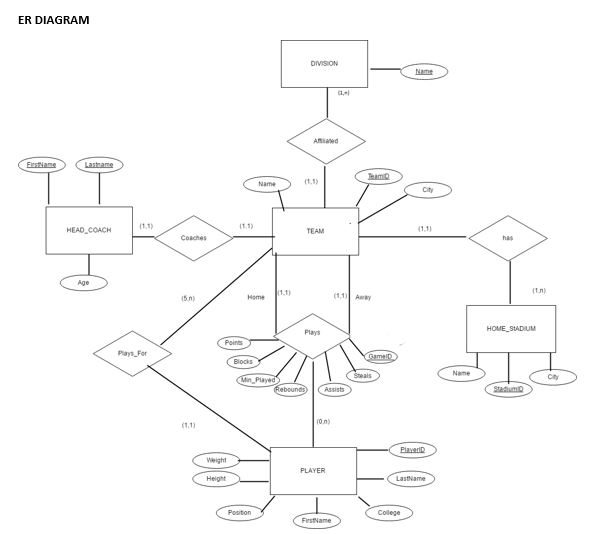
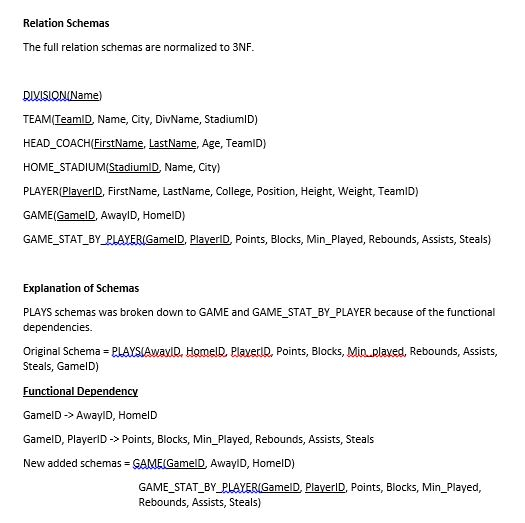
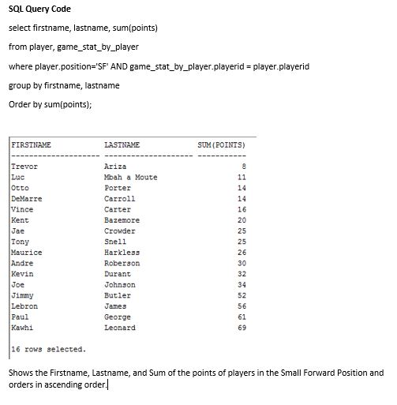

Database II Class Project
I wanted to build a National Basketball Association(NBA) database that has a roster for the teams, their division, their home stadiums, head coach, and stats of players in each game.
6 months
SQL, SQL Developer
I had to create a relational database from scratch. I first picked real world entities, identify their relationships, asssumptions and explain those assumptions.
Then had to model the database in a ER Diagram
Then I had to normalize the schemas to 3NF
Then I created the tables using SQL and inserting data manually into the database
ER Diagram

From the diagram above the real world entities were HEAD_COACH, DIVISION, PLAYER, TEAM, and HOME_STADIUM. The relationships are Coaches, Affiliated, HAS, Players_for, and Plays. Primary Keys are underlined and relationship numbers are stated in parenthesis.
3NF Schema

Above shows the schema and what was added and expanded to normalize the database to 3NF. It is similar to the ER Diagram, but with some added entities to remove functional dependecies.
Example Query

The SQL Code was over 10 pages in a word document of my report. It is too long to post on here. If you want to know more about the project or code email me at jeremykn222@gmail.com